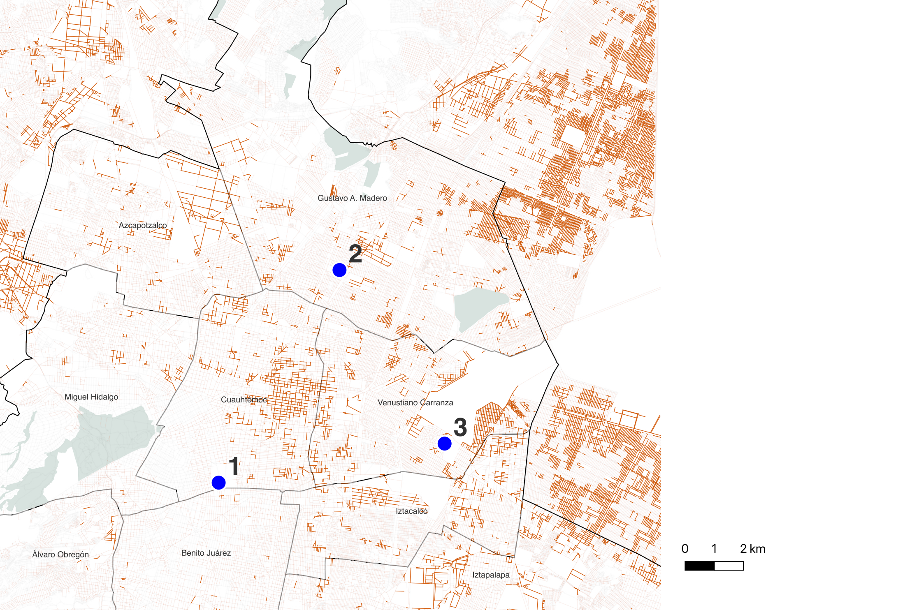
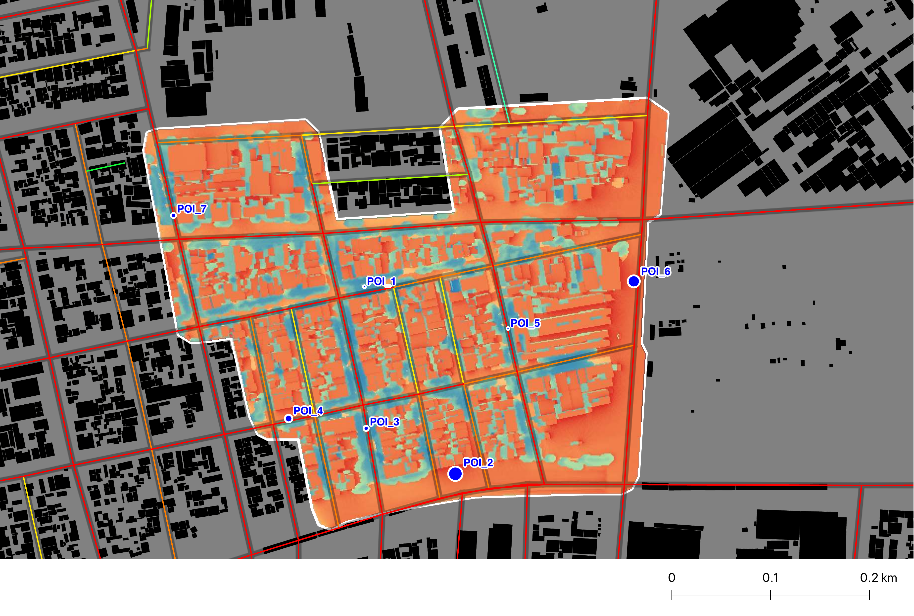
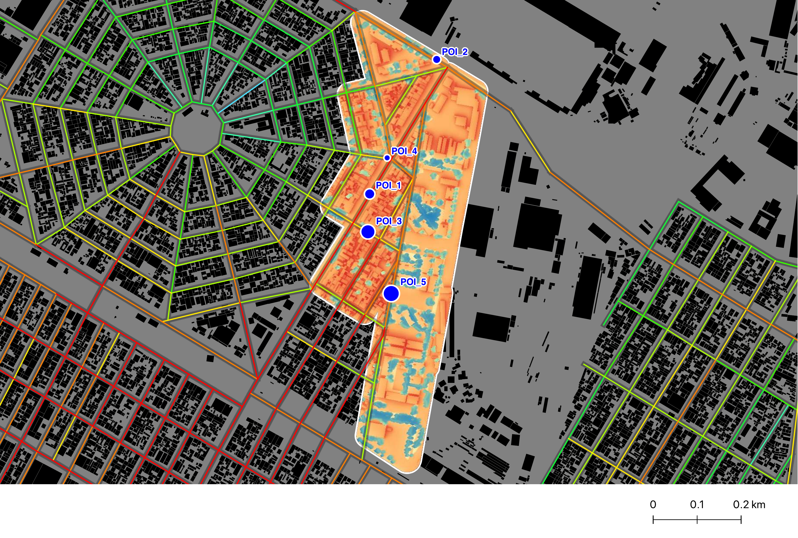
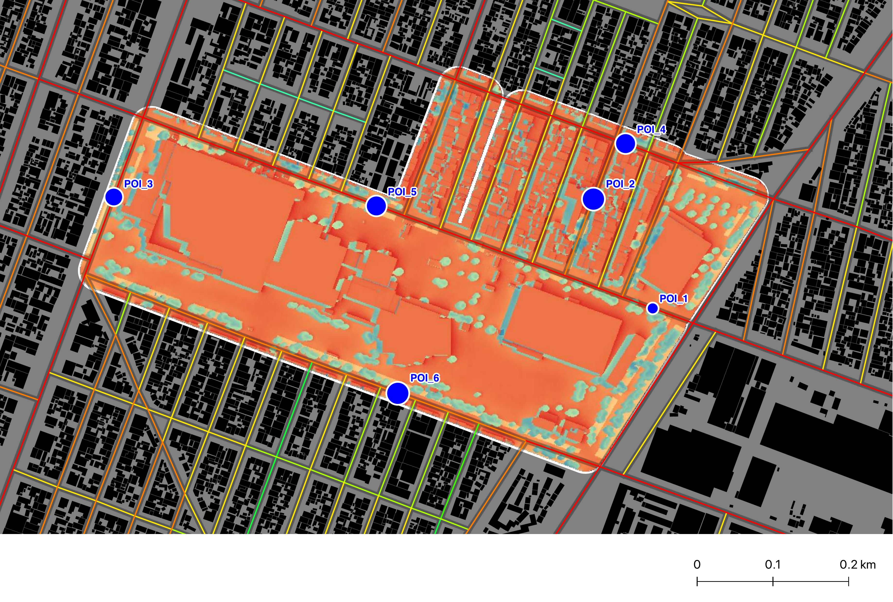
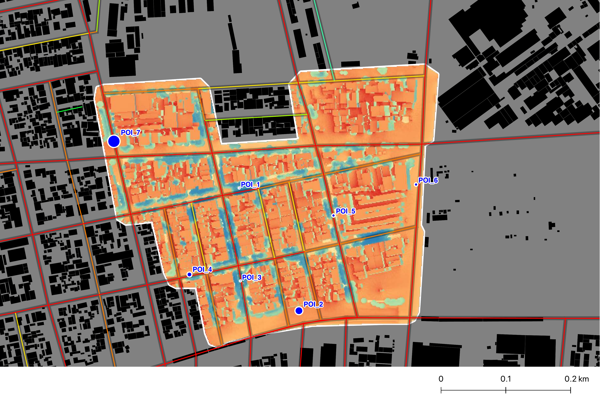
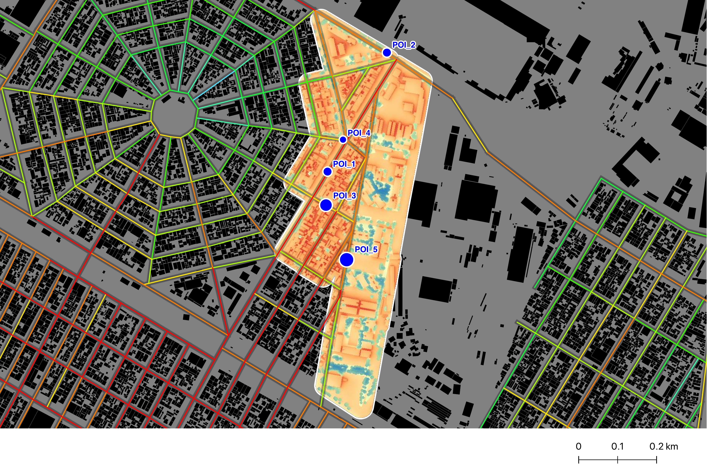
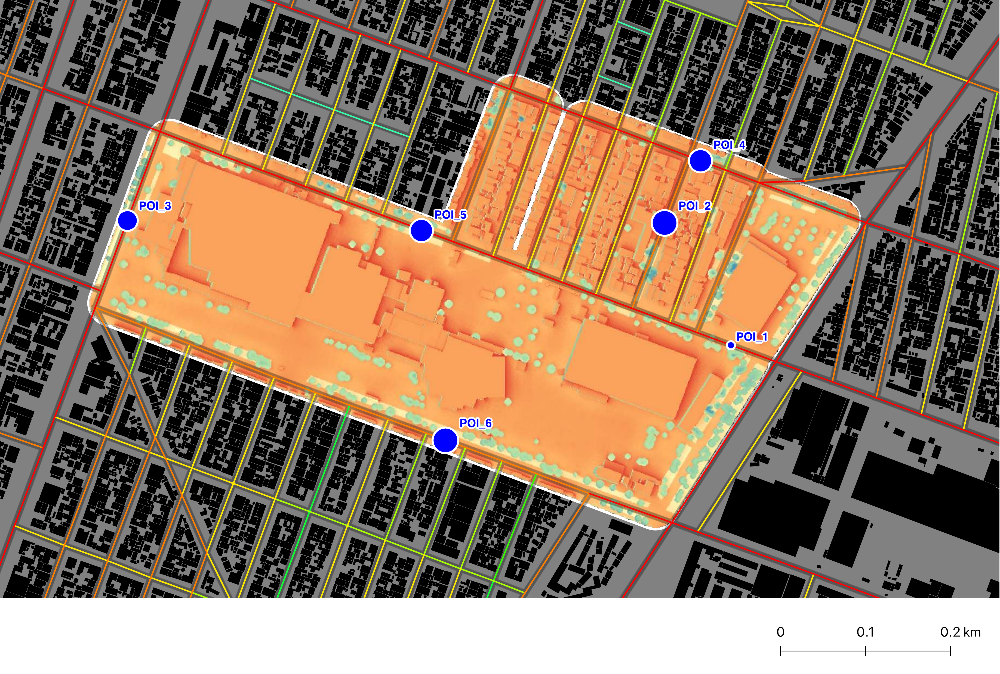
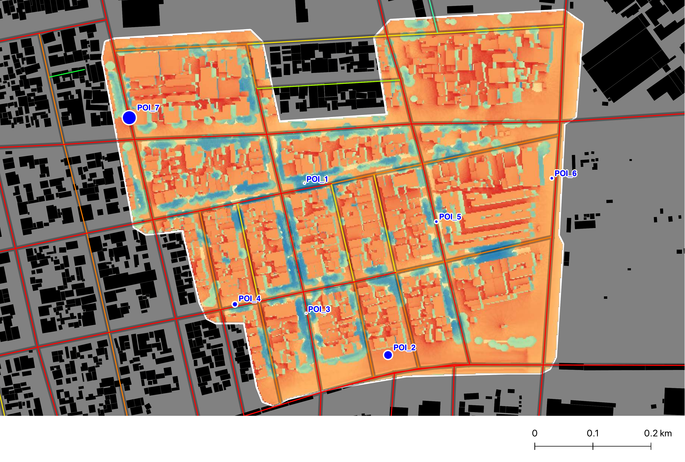
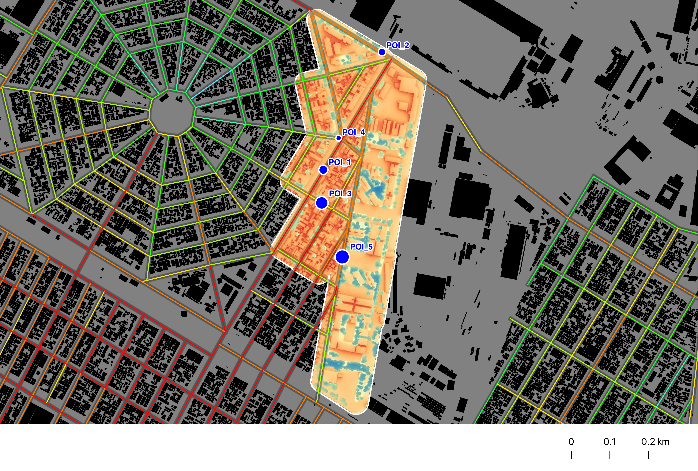
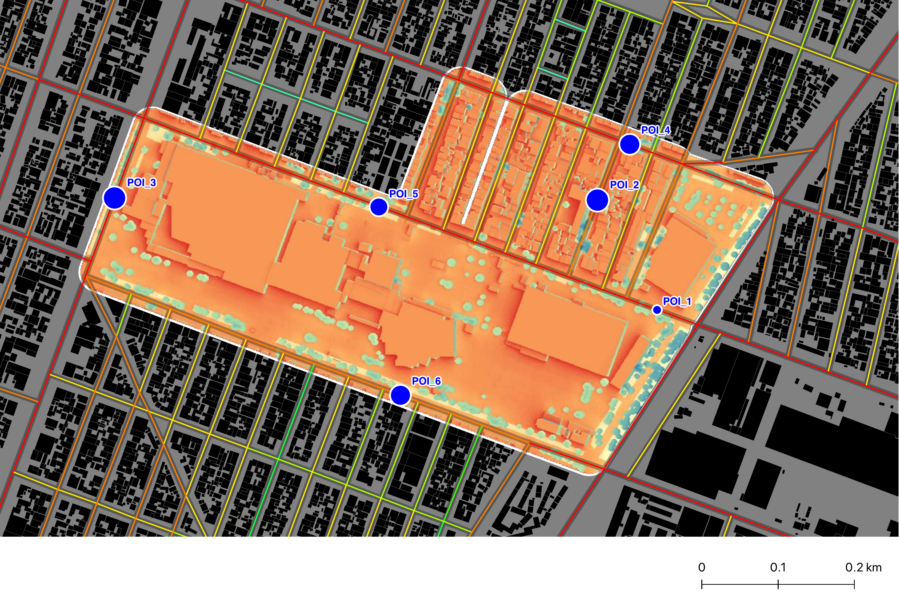

Puente entre teoría urbana y análisis técnico
Traduzco evidencia geoespacial en marcos analíticos, indicadores y criterios de intervención.
Soy Daniela Reséndiz García, especialista en análisis espacial y clima urbano. Trabajo en la intersección entre investigación aplicada, datos geoespaciales y evaluación multiescalar de desigualdades territoriales.
Traduzco evidencia geoespacial en marcos analíticos, indicadores y criterios de intervención.
He participado en proyectos de prevención y reconstrucción con enfoque de coordinación interinstitucional.
MSc en Space Syntax en The Bartlett, UCL, con enfoque en accesibilidad, exposición y desigualdad urbana.
Proyectos en CDMX y Chennai combinando percepción remota, morfología urbana, red vial y simulación microclimática.
El reporte 2025 de Lancet Countdown informa que la mortalidad asociada al calor aumentó 23% desde la década de 1990 y que la exposición al calor provocó la pérdida potencial de 640 mil millones de horas laborales en 2024 (Romanello et al., 2025). Este estudio examina cómo el calor extremo agrava desigualdades sociales preexistentes en la Ciudad de México y desarrolla una ruta operativa para dirigir enfriamiento donde genere el mayor beneficio social.
La exposición peatonal al calor no se distribuye de manera homogénea: se concentra en corredores con alta integración espacial y co-ocurrencia de vulnerabilidad social. Este patrón justifica una clasificación espacial escalonada (crítica, intermedia y de consolidación).
Se propone un sistema de priorización multiescalar con criterios reproducibles, métricas térmicas (Tmrt, UTCI, PET) y esquema de seguimiento comparativo por tramo para evaluación ex ante y ex post.
Alcance analítico: usar este visor como marco de referencia para integrar resultados macro, meso y micro con indicadores comparables de desempeño térmico peatonal.
L8/9 = Landsat 8/9 | GEE = Google Earth Engine | LST = Land Surface Temperature | Ta = temperatura del aire | DEM/DSM = Modelo Digital de Elevación/Superficie | GOB = Google Open Buildings | OSM = OpenStreetMap | INEGI = Instituto Nacional de Estadística y Geografía
| Paso | Fuentes de datos |
|---|---|
| Fase 1 (Macro): Mapeo térmico + colocalización de vulnerabilidad | |
| 1.1 | Productos Landsat 8/9 (L8/9) Collection 2 Level-2 (reflectancia de superficie + LST; escenas de verano, climatología multianual) procesados en GEE |
| 1.2 | Estaciones meteorológicas locales (RedMet, SEDEMA) para calibración; índices satelitales del Paso 1.1 |
| 1.3 | Microdatos censales a nivel manzana (INEGI 2020) y límites administrativos; predicciones de Ta del Paso 1.2 agregadas a manzanas |
| Fase 2 (Meso): Morfología urbana + configuración de red vial | |
| 2.1 | Huellas de edificios y alturas (Google Open Buildings + catastro CDMX como fuente auxiliar de alturas) |
| 2.2 | Red vial (OSM / red oficial de la CDMX) procesada con DepthmapX |
| 2.3 | Capas térmicas de la Fase 1 + salidas de los Pasos 2.1–2.2 para análisis de acoplamiento forma-red y selección de corredores |
| Fase 3 (Micro): Simulación biometeorológica para exposición peatonal | |
| 3.1 | DEM/DSM de alta resolución; huellas y alturas de edificios (Paso 2.1); capas de vegetación/dosel (derivadas de NDVI); forzamiento meteorológico (datos de estaciones) |
| 3.2 | Motor de simulación y parámetros (UMEP/SOLWEIG en QGIS); puntos de observación a lo largo de corredores seleccionados (del Paso 2.3) |
Citas: Magaña y Vargas (2020); WMO (2025).
Referencias: Magaña, V. and Vargas, N. (2020). Warm Spells and Climate Risk to Human Health in the Mexico City Metropolitan Area. Weather, Climate, and Society, 12(3), 351-365. DOI: 10.1175/WCAS-D-19-0096.1. World Meteorological Organization (2025). State of the Global Climate 2024. URL: WMO-1368-2024.
Lectura del resultado: el riesgo se concentra en territorios densos, menos vegetados y con mayor dependencia peatonal/transporte público. Esto respalda una focalización espacial, en lugar de intervenciones dispersas.
GSI es el predictor morfológico más sensible: correlación negativa con NDVI (r = -0.299) y positiva con Ta_mean (r = 0.228). Tipologías compactas y selladas concentran mayor Heat Index y menor capacidad de disipación térmica.
Las zonas hazard 2 combinan alta temperatura y alta integración de red. En términos de servicio urbano, los corredores de mayor demanda peatonal son también los de mayor exposición térmica.
Implicación analítica: los corredores integrados dentro de tejidos compactos concentran simultáneamente mayor flujo peatonal y mayor vulnerabilidad acumulada, por lo que su intervención tiene mayor efecto sobre la exposición total.
LST se convierte a Ta con modelo local: Ta = 0.5540 × LST + 5.7606, usando 17 estaciones RedMet (10:00–14:00).
GWR mejora ajuste en 16/16 alcaldías y mejora Moran p en 11/16 frente a OLS; esto valida heterogeneidad espacial para focalización territorial.
Persiste autocorrelación residual en GWR (p<0.05): uso recomendado para análisis comparativo y diseño urbano, no para inferencia causal directa.
Nota metodológica: se adopta 2014-2024 (n=11) por continuidad instrumental y comparabilidad interanual (Landsat 8/9 Collection 2 + calibración homogénea con RedMet), y porque la literatura reciente de LST urbano usa ventanas decenales para detectar señal térmica reciente [4,5]. Este periodo se usa para tendencia urbana, no como normal climatológica; para normales, WMO/IPCC emplean marcos de 30 años [1,2].
[1] WMO climatological normals. [2] IPCC AR6 Glossary (climate normal). [3] USGS Landsat 8-9 C2 L2 Science Product Guide. [4] Shafizadeh-Moghadam et al., 2025, J. Environ. Manage., doi:10.1016/j.jenvman.2025.127789. [5] RoohaniQadikolaei et al., 2025, Ecol. Indicators, doi:10.1016/j.ecolind.2025.113386.
Series en °C para LST y Ta. Se muestran todos los años (2014-2024).
Series adimensionales de Albedo, NDBI y NDVI, comparables con la tendencia de Ta. En albedo: 0 = absorbe más radiación y 1 = refleja más radiación.
Esta fase cuantifica exposición peatonal en corredores de alta integración (NAIN r500/r1500) usando UMEP/SOLWEIG con forzamiento local por zona. El objetivo es definir especificaciones técnicas de diseño a partir de Tmrt, UTCI y PET en tres ventanas operativas de calor: 10:00, 12:00 y 14:00.
Citas: Bröde et al. (2012); Matzarakis et al. (1999).
Referencias: Bröde, P. et al. (2012). Derivation and validation of the Universal Thermal Climate Index (UTCI). International Journal of Biometeorology, 56, 481-494. DOI: 10.1007/s00484-011-0454-1. Matzarakis, A., Mayer, H. and Iziomon, M.G. (1999). Applications of a universal thermal index: PET. International Journal of Biometeorology, 43, 76-84. DOI: 10.1007/s004840050118.

| Caso | Régimen térmico | Grupo social dominante | Morfología dominante | Rango UTCI/PET (estudio) |
|---|---|---|---|---|
| Zona 1 — Hospital General | 26–28°C (moderado), sin señal estructural en ≥28°C | Adultos mayores (65+) y baja escolaridad (primaria) | Perímetro bajo (37.5%), Barras (31.2%), Perímetro medio (25.0%) | UTCI 29.6→32.9 (media diaria); PET media hasta 37.2 a las 14:00 y excedencias PET>41 en puntos críticos |
| Zona 2 — Entorno AICM | Predominio del umbral de 26°C (hot26) con transición parcial al umbral de 28°C (hot28) | Baja escolaridad como factor consistente | Sin predio/sin catastro (54.2%), Perímetro bajo (29.2%), Hilera/adosada (8.3%) | UTCI estable ~34–35; PET 38.7–40.8 con picos >41 a las 10:00 y 14:00 |
| Zona 3 — Basílica de Guadalupe | Vulnerabilidad activada principalmente en ≥28°C | Adultos mayores (65+) en régimen extremo | Compacta continua (44.4%), Perímetro bajo (33.3%), Hilera/adosada (22.2%) | UTCI ~35–36; PET 39.5–41.6 (máximo reportado 43.4 a las 14:00) |









| Caso | Régimen dominante | Población más expuesta | Mecanismo espacial | Hora crítica | Síntesis de intervención |
|---|---|---|---|---|---|
| Zona 1 — Hospital General | Calor moderado (26–28°C) | Adultos mayores + baja escolaridad | Corredores integrados en tejido perimetral | 14:00 | Intervención inmediata en corredores estructurantes |
| Zona 2 — Entorno AICM | Transición hot26→hot28 | Baja escolaridad | Alta integración + morfologías en transición | 10:00 y 14:00 | Mitigación preventiva y ajustes de transición |
| Zona 3 — Basílica de Guadalupe | Calor extremo (≥28°C) | Adultos mayores | Compacidad alta + corredores de alta centralidad | 10:00 y 14:00 | Actuación prioritaria por régimen térmico extremo |
Intervenir tramos con mayor exposición peatonal para reducir carga radiante entre 10:00 y 14:00.
Instalar nodos de sombra, descanso e hidratación cada 300-500 m en ejes con demanda peatonal alta.
Aplicar soluciones de enfriamiento pasivo (arbolado, pavimento frío y control de insolación en suelo expuesto).
Secuencia analítica sugerida: iniciar con Medida 1 en corredores críticos, complementar con Medida 2 para protección inmediata y usar Medida 3 como consolidación del desempeño térmico en el mediano plazo.
El riesgo térmico peatonal es medible, espacialmente concentrado y socialmente desigual; no es homogéneo en la ciudad.
Un marco trazable macro→meso→micro que vincula diagnóstico térmico-social con criterios de diseño urbano y priorización espacial.
Monitoreo de campo y evaluación longitudinal para estimar persistencia de efectos y transferibilidad entre tipologías urbanas.
Agradezco al Dr. Kimon Krenz, a UCL y a las instituciones y equipos técnicos de la Ciudad de México por el diálogo y la retroalimentación que fortalecieron esta investigación. Agradezco especialmente a la Secretaría de Ciencia, Humanidades, Tecnología e Innovación (SECIHTI), cuya beca hizo posibles mis estudios de posgrado.